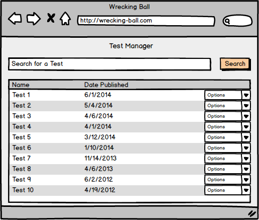

This introductory scenario shows an administrator or teacher how to edit the test bank through the Manage Tests option. The administrator/teacher first clicks on the Test Manager which will bring up a menu allowing the administrator to select "manage tests." Once the option has been selected, the administrator is taken to the Test Bank where all administrative functions associated with editing the test bank take place.
The test bank, as shown in Figure 1, shows a populated bank that contains multiple tests -- the teacher has already added multiple tests to the test bank to be administers.

Figure 1: The populated test bank
Figure 2: Test Bank popup menu
By clicking on "delete," the administrator removes the selected test from the test bank. The other option, "activate/deactivate," toggles the status of the test. The option reads "activate" if the selected test is inactive and the option reads "deactivate" if the test is active.
A test is considered active if it is administered to students -- the test is essentially a public test to the students of the course the test belongs to. However, an inactive test has not yet been administered or has been deactivated so the teacher can make edits to it.